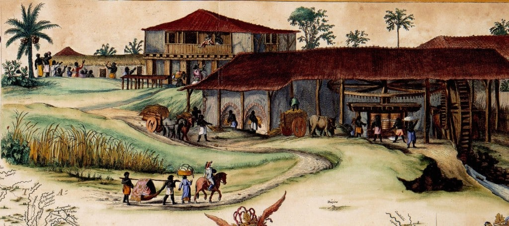
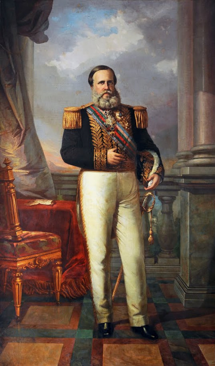
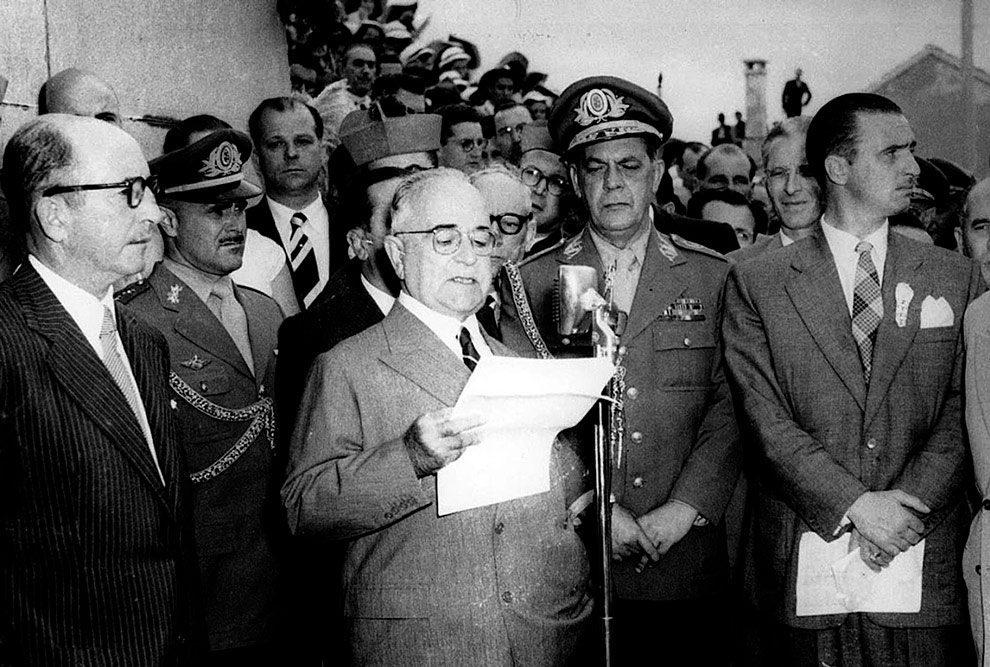
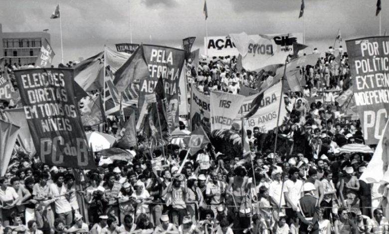
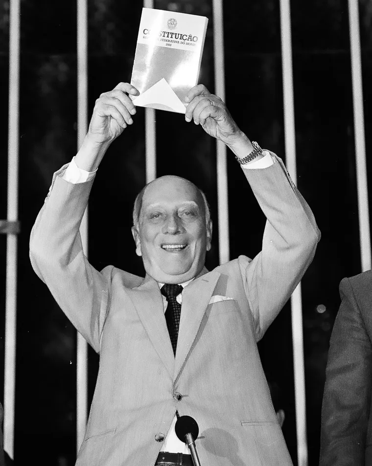
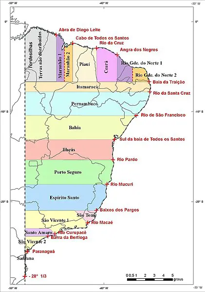
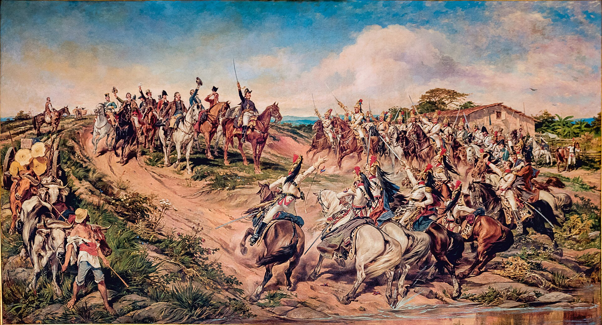
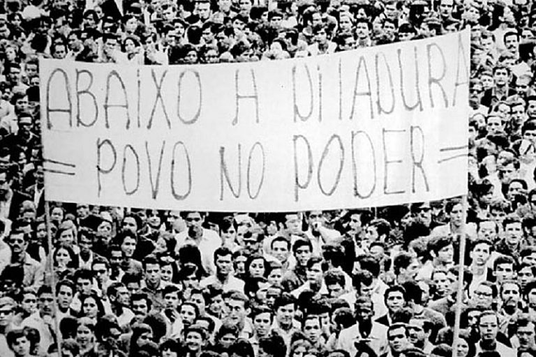

Brasil Colônia (1500–1822)
O período colonial brasileiro foi marcado pela exploração econômica e pela imposição cultural portuguesa. Durante mais de três séculos, o território serviu como fonte de riqueza para a metrópole, sustentado por ciclos econômicos e pelo trabalho escravo.
Os Ciclos Econômicos
O ciclo da cana-de-açúcar, predominante nos séculos XVI e XVII, foi o primeiro grande motor econômico da colônia. Concentrado no Nordeste, especialmente em Pernambuco e Bahia, o sistema de plantation utilizava mão de obra escravizada africana em larga escala. No século XVIII, a descoberta de ouro em Minas Gerais deslocou o centro econômico para o interior, gerando o ciclo do ouro e dando origem a cidades como Vila Rica, atual Ouro Preto.
A Escravidão como Base Estrutural
A escravidão não foi apenas um modelo de trabalho, mas a base sobre a qual toda a estrutura social e econômica colonial foi construída. Estima-se que entre 4 e 5 milhões de africanos foram trazidos ao Brasil em condições desumanas. Esse legado histórico deixou marcas profundas na desigualdade social que persiste até os dias atuais.

O Império Brasileiro (1822–1889)
A independência do Brasil, proclamada em 7 de setembro de 1822, foi um processo conduzido pelas elites locais e pela própria família real portuguesa, distinguindo-se das revoluções violentas que ocorreram nas colônias espanholas. O país tornou-se uma monarquia constitucional sob D. Pedro I e, posteriormente, D. Pedro II.
O Processo de Independência
A vinda da família real portuguesa ao Brasil em 1808, fugindo das tropas napoleônicas, transformou a colônia em sede do império. A abertura dos portos às nações amigas e a elevação do Brasil a Reino Unido de Portugal criaram as condições para a independência. Em 1822, D. Pedro I proclamou a separação, mantendo a monarquia e a escravidão — escolhas que revelariam contradições profundas ao longo do século.
O Segundo Reinado e D. Pedro II
O reinado de D. Pedro II (1840–1889) foi o mais longo período de estabilidade política do Brasil imperial. Marcado pela Guerra do Paraguai (1864–1870) e pelo avanço abolicionista, o Segundo Reinado terminou com a proclamação da República em 15 de novembro de 1889, resultado de uma conspiração militar com apoio de fazendeiros insatisfeitos com a abolição da escravidão, ocorrida em 1888.

A República Velha (1889–1930)
O período da República Velha foi dominado pela política do café com leite, alternância de poder entre as oligarquias de São Paulo e Minas Gerais. O coronelismo e o voto de cabresto caracterizavam a política local, mantendo as massas rurais sob controle das elites agrárias.
Tensões e Movimentos Sociais
A República Velha não foi um período de estabilidade plena. Movimentos como a Guerra de Canudos (1896–1897), liderada por Antônio Conselheiro no sertão baiano, e a Revolta da Chibata (1910), protagonizada por marinheiros negros contra os castigos físicos na Marinha, revelaram as profundas contradições sociais do período. A exclusão das camadas populares do processo político e as crises econômicas criaram o terreno para a Revolução de 1930.
Era Vargas (1930–1945 e 1950–1954)
A Revolução de 1930 encerrou a República Velha e levou Getúlio Vargas ao poder. Seu governo, que durou até 1945 e retornou de 1950 a 1954, transformou profundamente o Estado brasileiro, combinando modernização econômica, populismo e autoritarismo.
A Modernização do Estado
Vargas promoveu a industrialização do país por meio da criação de empresas estatais como a Companhia Siderúrgica Nacional (CSN) e a Petrobras. O governo investiu em infraestrutura e buscou reduzir a dependência externa do Brasil, consolidando um modelo de desenvolvimento nacional.
As Leis Trabalhistas
Uma das marcas mais duradouras do varguismo foi a criação da Consolidação das Leis do Trabalho (CLT) em 1943. A legislação regulamentou a jornada de trabalho, o salário mínimo, as férias remuneradas e os direitos sindicais, integrando o trabalhador urbano ao projeto político do Estado. Vargas construiu sua imagem como o "pai dos pobres" ao vincular os direitos trabalhistas à sua figura pessoal.
O Estado Novo e a Ditadura
Em 1937, Vargas deu um golpe de Estado e instaurou o Estado Novo, um regime ditatorial de inspiração fascista. A Constituição foi suspensa, os partidos políticos foram extintos e a imprensa foi censurada. O regime utilizou o Departamento de Imprensa e Propaganda (DIP) para controlar a informação e construir o culto à personalidade de Vargas. O Estado Novo durou até 1945, quando Vargas foi deposto por um movimento militar.

A Ditadura Militar (1964–1985)
Em 31 de março de 1964, um golpe militar depôs o presidente João Goulart, instaurando um regime ditatorial que duraria 21 anos. O período foi marcado pela supressão das liberdades civis, pela perseguição política e pela violência de Estado.
Os Atos Institucionais e a Censura
Os militares governaram por meio de Atos Institucionais (AIs), decretos que suspendiam direitos constitucionais. O AI-5, decretado em 1968, foi o mais severo: fechou o Congresso Nacional, cassou mandatos, suspendeu o habeas corpus e instaurou a censura prévia à imprensa, ao teatro e às artes. Artistas como Chico Buarque, Caetano Veloso e Gilberto Gil foram exilados ou perseguidos.
O Milagre Econômico e a Resistência
Entre 1968 e 1973, o Brasil viveu o chamado "milagre econômico", com taxas de crescimento do PIB superiores a 10% ao ano. No entanto, os frutos desse crescimento foram concentrados nas mãos de poucos, aprofundando a desigualdade. A resistência ao regime organizou-se em movimentos estudantis, sindicais e guerrilhas urbanas, que foram brutalmente reprimidas pelo aparato de segurança do Estado.
O Movimento Diretas Já
Com a abertura política gradual iniciada pelo general Ernesto Geisel, a sociedade civil ganhou espaço para se reorganizar. Em 1983 e 1984, o movimento Diretas Já mobilizou milhões de brasileiros em comícios pelo país, exigindo eleições diretas para presidente. Embora a Emenda Dante de Oliveira tenha sido rejeitada no Congresso, o movimento demonstrou a força da sociedade civil e acelerou o fim do regime. Em 1985, Tancredo Neves foi eleito presidente pelo Colégio Eleitoral, encerrando a ditadura militar.

Brasil Contemporâneo (1985–hoje)
A redemocratização do Brasil foi um processo gradual que culminou na promulgação da Constituição de 1988, considerada um marco na história dos direitos civis no país. O período que se seguiu foi marcado por avanços sociais, instabilidade econômica e crises políticas.
A Constituição de 1988
Promulgada em 5 de outubro de 1988 pelo presidente da Assembleia Nacional Constituinte, Ulysses Guimarães, a nova Constituição ficou conhecida como a "Constituição Cidadã". Ela garantiu direitos fundamentais como a liberdade de expressão, o voto a partir dos 16 anos, a criminalização do racismo, os direitos trabalhistas ampliados e a proteção ao meio ambiente. Foi um rompimento definitivo com o legado autoritário da ditadura militar.
Os Desafios da Nova República
A Nova República enfrentou desafios imediatos. A hiperinflação, que chegou a 80% ao mês no início dos anos 1990, foi combatida com o Plano Real em 1994, durante o governo Itamar Franco. A estabilização econômica permitiu ao Brasil avançar em políticas sociais nas décadas seguintes, com programas como o Bolsa Família, que contribuíram para a redução significativa da pobreza.
Polarização e Crise Política
O século XXI trouxe avanços e retrocessos. Os governos do PT (2003–2016) promoveram crescimento econômico e inclusão social, mas foram marcados por escândalos de corrupção investigados pela Operação Lava Jato. O impeachment da presidenta Dilma Rousseff em 2016 aprofundou a polarização política, cujos reflexos moldaram as disputas eleitorais seguintes e os debates sobre o futuro das instituições democráticas brasileiras.

Galeria Histórica
Registros e ilustrações dos principais períodos da história do Brasil.



Referências
- FAUSTO, Boris. História do Brasil. São Paulo: Edusp, 2013.
- SCHWARCZ, Lilia Moritz; STARLING, Heloisa Murgel. Brasil: Uma Biografia. São Paulo: Companhia das Letras, 2015.
- História do Brasil — historiadobrasil.net
- Memórias Reveladas — Arquivo Nacional